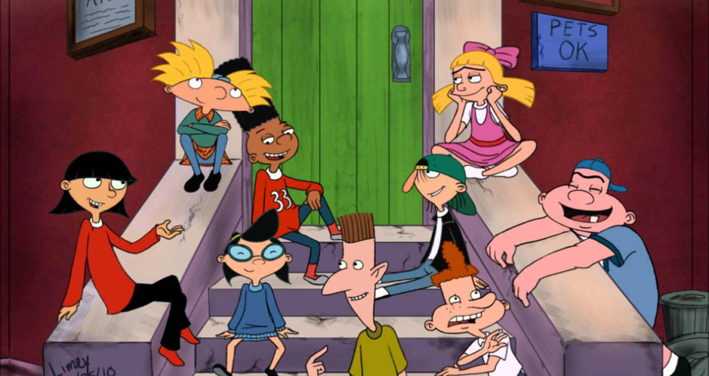

About Helga
Helga is a fierce badass character! She can be cynical and bossy at one minute, and very vulnerable and poetic the other. Mostly, we see how she bullies her classmates and replies sarcastically to express her annoyance and usually mocks her classmates by calling them nicknames.

Helga punching Brainy
Helga's Characteristics:
- She wears a pink dress while playing baseball with boys. This is not a typical good girl who worries about her apprereance. She is a real tomboy that can be so inspiring for young girls.
- Although she is seen as a "mean girl" by her classmates, she is very emotional, poetic and caring.
- She is one intelligent child. She spouts dramatic soliloquies with ease and a damn impressive vocabulary. She’s well-read and cultured. She’s able to identify the work of Edward Hopper and makes a reference to George Orwell’s 1984.
Relationships With Peers
In spite of the fact that Helga can be a real bully, she has an interesting relationships with:
